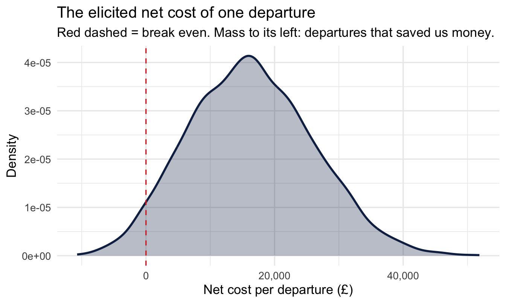
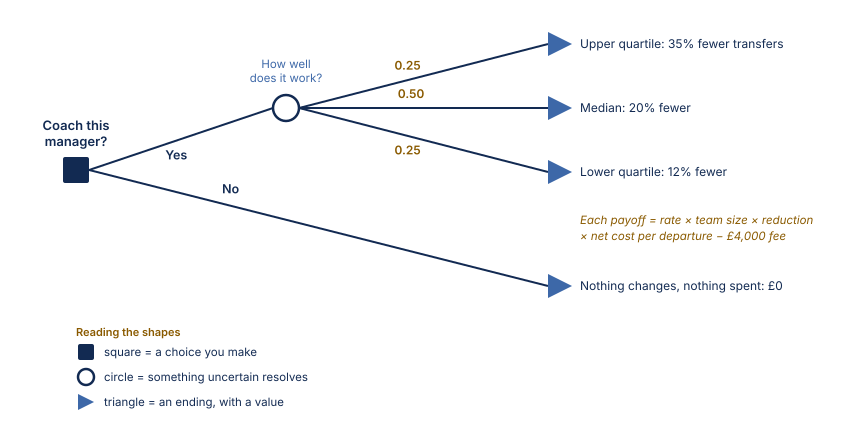
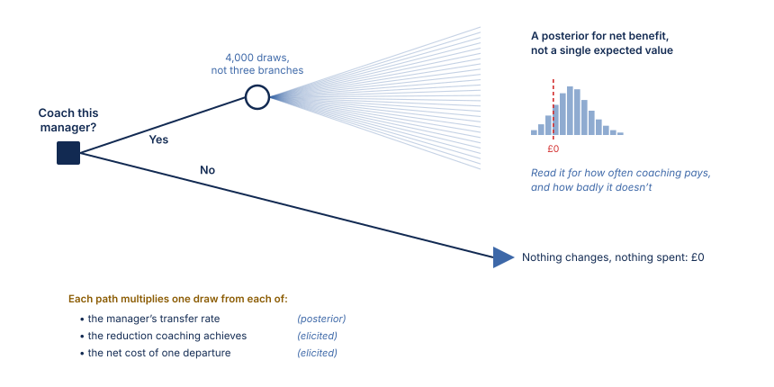
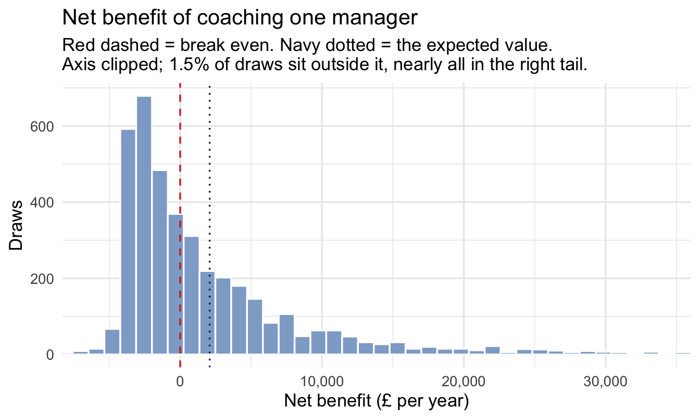
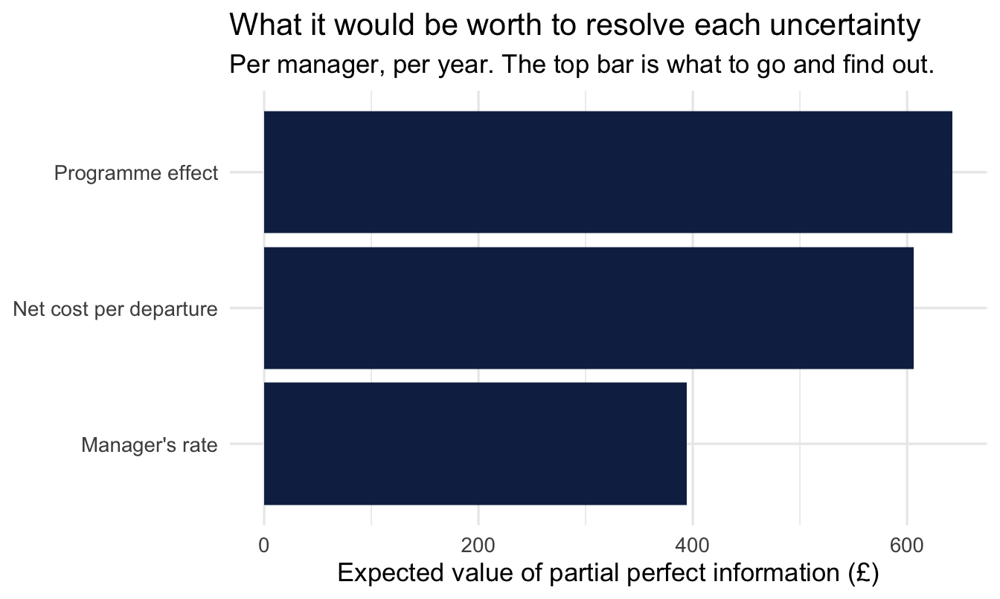
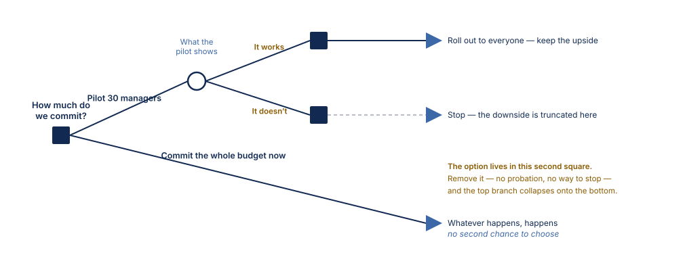

library(tidyverse)
library(peopleanalyticsdata)
library(brms)
library(tidybayes)
library(SHELF) # Chapter 23's elicitation tool, used again here
theme_set(theme_minimal(base_size = 13))
set.seed(2026)
# Shared colour tokens (matching theme/academicdesign*.scss). The navy ramp
# carries the data; red is reserved for reference lines and annotations,
# never for a second data series.
navy <- "#122a52"
navy_mid <- "#3d68a8"
navy_light <- "#8fabd0"
red <- "#d32f2f"
data("managers", package = "peopleanalyticsdata")
managers <- managers |>
drop_na(transfers, group_size, employee_id, city, performance_group)24 From Posterior to Decision: What an Analysis Is Worth
Welcome back
Every chapter so far has ended in the same place. A posterior, an interval, and a sentence you can say out loud without misleading anybody.
Nobody acts on a posterior.
The decision at the end of a People Analytics project is almost always binary and almost always financial: do we fund this, or not. Between the posterior and that decision sits a step this book has not taken yet, and which most statistics books never take at all — working out what each possible outcome is worth, and spending the posterior against it.
The complaint this chapter is about
People Analytics has spent fifteen years being asked to demonstrate impact, and has mostly answered in one of two unsatisfying ways.
The first is a correlation dressed as a consequence: engaged teams sell 21% more, with no account of what would happen if you intervened. Chapter 13 dealt with why that sentence usually cannot support the weight put on it.
The second is worse, and more common in board packs: a single confident number. This programme delivered a 3.2x return. It is arrived at by multiplying point estimates together, it carries no uncertainty, and everybody in the room knows it is decorative. The finance function knows it best of all, which is why the number is politely received and quietly discounted.
The bridge is not more rigour in the estimate. It is a loss function — a statement of what each outcome costs — evaluated over the posterior you already have. What comes out is still a return, but it comes out with an interval, and an interval is the thing a finance director will actually argue with rather than ignore.
Important
This chapter is the one I would most like a reader who commissions analysis to read. Almost none of it is statistics. It is about what you have to write down before an analysis can change anything, and most of that writing down happens before the model is fitted.
What you’ll be able to do by the end
- Explain why a posterior is an input to a decision, not a decision
- Put an honest distribution on the cost of an outcome nobody has priced, and get it vouched for
- Run a decision tree on posterior draws, and read the distribution of net benefit rather than a single expected value
- Derive an action threshold from the relative cost of the two mistakes, instead of from convention
- Compute EVPI and EVPPI directly from draws, and say which uncertainty is worth paying to reduce
- Recognise when a wide posterior is an asset rather than a problem
24.1 Setup
We return to Chapter 15’s managers, and to Chapter 15’s model — the partially pooled transfer rate, with group_size as the exposure:
fit_shrink <- brm(
transfers ~ 1 + (1 | employee_id) + offset(log(group_size)),
data = managers, family = poisson(),
prior = c(prior(normal(-2.5, 1), class = Intercept),
prior(exponential(2), class = sd)),
chains = 4, iter = 2000, seed = 13, refresh = 0
)Chapter 15 stopped where most such analyses stop: a fair ranking, and a warning about publishing it. The question nobody asked there is the one the HR Director actually has.
“We can afford to put about thirty managers through the coaching programme. Which thirty, and is it worth doing at all?”
24.2 Part 1 — The multiplication nobody does
A posterior tells you what is plausible. A decision needs one more thing: what each outcome is worth. Multiply them together, average over the posterior, and you have the expected value of an action.
That is the whole of decision theory in a sentence, and the reason it is not routine in People Analytics is not that the mathematics is hard. It is one line of R. The reason is that the second input — the cost — is the one nobody will write down.
NoteA different lens: this predates all of it
Choosing the action that minimises expected loss is not a Bayesian invention. Decision analysis was assembled at Stanford and Harvard in the 1960s — Raiffa and Schlaifer’s Applied Statistical Decision Theory in 1961, Howard’s work on decision analysis from 1966 — and decision trees were being drawn for business audiences in the Harvard Business Review by 1964.
What is genuinely Bayesian is the input. Expected loss is an average over a probability distribution for the unknown quantity. A frequentist analysis does not produce one — a confidence interval is a statement about the procedure, not a distribution over the parameter, as Chapter 5 laboured. So the classical route has to substitute a point estimate and lose the uncertainty at exactly the moment it matters most.
This is the strongest practical argument in the book for working the Bayesian way, and it has taken twenty-three chapters to be able to make it.
There is also an uncomfortable piece of the field’s own history here. HR very nearly got there first: Cronbach and Gleser reframed selection testing as statistical decision theory in the 1950s, and the utility formula that came out of it is still taught. The field kept the formula and dropped the framework — which is why utility analysis is remembered as an arithmetic exercise about assessment methods, rather than as the decision-theoretic apparatus it was drawn from.
24.3 Part 2 — Pricing an outcome nobody has priced
Here is the objection, and it is a fair one:
“You cannot put a number on somebody resigning.”
You cannot put a number on it. That was never the requirement. Everything else in this book is a quantity we are uncertain about, handled by putting a distribution on it and carrying the uncertainty through. A cost is no different. The demand for a single defensible figure is what makes the exercise feel impossible, and it is a demand nobody made.
So elicit it, exactly as Chapter 23 elicited a prior.
24.3.1 Three questions, asked of the right person
The right person is not you. It is whoever owns the budget that absorbs the cost — usually a finance business partner, sometimes the function head.
What we want from them is the net cost of a departure: what it costs to replace someone, less whatever we save by no longer employing them. That framing matters, because the net figure is not always positive. If we were paying somebody more than they were delivering, their leaving is worth something, and a loss function is perfectly capable of carrying a negative loss.
When someone in this population leaves and we replace them, what does it cost us net of what we stop paying? Start with the range you’d be astonished to fall outside. Now split it: what figure is it equally likely to be above or below? And what splits each half again?
Those are Chapter 23’s quartile questions, asked about a cost instead of an effect. Say the answers come back at £10,000, £15,000 and £23,000 — recruitment fees, the hiring manager’s time, the ramp-up period where the replacement is paid full salary at partial productivity — inside a plausible range running from minus £20,000 to £90,000. The negative end is the case where we were carrying somebody.
24.3.2 Fitting it, with the limits doing real work
Chapter 23’s tool does this, and here the limits are not decoration:
- 1
-
The plausible limits, asked for first and now used. Supplying both is what lets
fitdist()offer a Beta, the only family in its list bounded at both ends. - 2
- The two shape parameters of the fitted Beta, rescaled onto our interval rather than sitting on 0–1.
- 3
- The sum of squared error for every family it tried. Read it before choosing — it is the evidence for the callout below.
shape1 shape2
1 9.348091 19.07315
normal t skewnormal gamma lognormal logt beta mirrorgamma
1 0.00213 0.00207 0.00032 0.0012 0.00083 8e-04 0.00162 0.00266
mirrorlognormal mirrorlogt
1 0.00294 0.00286- 1
-
sampleFit()returns a matrix with one column per fitted family — and, a trap worth knowing, its column names are not the names in the fitted object.Log.normalbecomeslognormal,Student.tbecomest. Runcolnames()on it once rather than assuming; a misspelt column name here returnsNULLrather than an error. - 2
- Check the fit reproduces roughly what you were given, and that the range respects the limits. Both should hold, and the draws come back in pounds rather than on a 0–1 scale.
25% 50% 75%
9481.762 16106.934 22891.522
[1] -10706.42 51849.91And, per the habit this book has kept since Chapter 5, look at it before using it:
tibble(net_cost = net_cost_draws) |>
ggplot(aes(x = net_cost)) +
geom_density(fill = navy, colour = navy, alpha = 0.30, linewidth = 1) +
1 geom_vline(xintercept = 0, linetype = "dashed", colour = red) +
scale_x_continuous(labels = scales::comma) +
labs(
title = "The elicited net cost of one departure",
subtitle = "Red dashed = break even. Mass to its left: departures that saved us money.",
x = "Net cost per departure (£)", y = "Density"
)- 1
- Zero is the value this distribution is argued against, so it takes the reference colour. The mass to its left is finance’s honest admission that some departures do us a favour.

ImportantWhy the Beta, when it isn’t the best fit
net_cost_fit$ssq does not name the Beta as the closest fit — a skew-normal fits the three points several times better, and for the programme effect below a log-t fits better still. Taking the Beta is a deliberate override, and it is worth saying why out loud.
Sum of squared error measures how closely a curve passes through the three points you elicited. It says nothing about what the curve does beyond them. The skew-normal and the log-t are unbounded, and the log-t in particular has a very heavy right tail. Fitted to a proportion that cannot exceed 1, it will happily put probability above 1 — and every one of those draws enters the decision as a programme that more than eliminates the problem.
So we trade a little accuracy at three points for a family that cannot produce impossible values anywhere. That is usually the right trade, and it is the same argument Chapter 23 made for taking $Normal over $best.fitting: pick the family for the property you need, then check what it cost you.
Two conditions on that. Look at the ssq rather than assuming the penalty is small — if the Beta is far worse, the expert’s judgement may not be Beta-shaped and you should go back to them. And say what you did, because “we used the bounded fit rather than the closest one” is the sort of choice a reviewer is entitled to see.
24.3.3 The promise
The elicited distribution is only worth something if the organisation will stand behind it. The move that makes this work in practice is small and political rather than statistical:
ImportantGet finance to agree to the range, not to certify the number
You are not asking the finance business partner to agree that a resignation costs £15,000. You are asking a much weaker and much more answerable question: would you accept this range in a business case?
That is a question a finance partner can say yes to, because it commits them to nothing they don’t already believe, and it converts your analysis from “HR’s estimate” into “the number finance already signed off”. Every subsequent argument is then about the decision rather than about whether you were allowed to use the figure.
Do it in writing, do it before you see the result, and record who said it.
That last point is not bureaucratic caution. A cost distribution agreed after the effect is known will be negotiated, unconsciously and in good faith, into whatever makes the answer come out the way the room wants. This is Chapter 13’s pre-commitment discipline applied to the other input.
WarningUncertainty is not the same thing as disagreement about values
A distribution says we don’t know this number. It does not say we value this differently, and the two get confused constantly.
If the Head of Sales and the Head of HR give different figures for the cost of a resignation because one is including lost pipeline and the other isn’t, that is uncertainty about a shared quantity, and pooling is the right response.
If they differ because one thinks the only cost that counts is cash out of the door this year and the other thinks the cost is the capability you no longer have, that is a disagreement about values, and averaging it produces a loss function neither of them holds. The right move there is not to pool. It is to run the decision twice, once under each loss function, and show both. If the action is the same either way, the disagreement was never decision-relevant and you can say so. If it isn’t, you have found the real argument, and it was never a statistical one.
24.3.4 The second elicited quantity
The programme’s effect needs the same treatment. Nobody has run it yet, so there is no data — this is Chapter 23’s situation exactly. The Head of L&D gives a proportional reduction in transfer requests with a median of 20% and quartiles at 12% and 35%, inside a range running from no effect at all to eliminating the problem entirely:
- 1
-
A proportional reduction lives on [0, 1] by definition. Handing those limits to
fitdist()is the whole fix — the Beta cannot produce a value outside them, so nothing downstream needs guarding. - 2
- Confirm it. Every draw should sit inside the limits.
25% 50% 75%
0.1110476 0.2091398 0.3384029
[1] 0.0009922578 0.8370952829
CautionWhat this replaced, and why it is worth showing
An earlier draft of this chapter fitted a lognormal to those same three numbers by hand, then clipped anything above 1 back down to 1. It looked harmless. It was not, and the failure is instructive enough to keep.
A lognormal has two parameters, so fixing the median and the inter-quartile range fixes the tail as well — you do not get to choose it. Fitted to 0.12 / 0.20 / 0.35, it put 2.1% of draws above 1.0: 85 in 4,000, each one clipped to exactly 1, and each one therefore carrying the largest effect the model allows. On a density plot they show up as a spike at the boundary that no expert ever described, and because they sit at the maximum they dragged about 8% of the mean effect with them. Multiplied by an unbounded cost, that produced a long right tail on the net-benefit chart which was entirely an artefact of the fitting choice.
The lesson is not “avoid the lognormal”. It is that a guard like pmin() is a sign the family is wrong. Clipping does not remove the misfit, it piles it up on the boundary — where it does more damage than leaving it alone would have done.
And the programme has a price, which is the one number that genuinely is known: say £4,000 per manager, invoiced.
24.4 Part 3 — The decision tree, run on draws
A decision tree is the structure of the decision: what you choose, what happens by chance afterwards, and what each ending is worth. Drawn for one manager, ours is small.

Read Figure 24.1 left to right. You choose; the world then does something you don’t control; and each path ends somewhere with a number on it. Multiply each ending by the probability of reaching it, add them up, and the branch with the higher total is the one to take.
That is a complete method, and for sixty years it has been how this is done. It also has a weakness this book has spent twenty-three chapters sharpening your eye for.
WarningThree branches is not what you believe
The probabilities in Figure 24.1 came from the quartiles the Head of L&D gave us: a quarter chance of the top band, a half of the middle, a quarter of the bottom. That is a fair summary of her judgement, and it is still a summary. She does not think the reduction is exactly 12%, 20% or 35% and nothing else. Those were the points where her belief splits into quarters, not the only values it can take.
The same is true of the other two nodes. Chapter 15’s model gave us a posterior for the manager’s rate, not one number. The elicited cost is a Beta spread across a range that reaches below zero, not three prices.
Collapsing each of them to a handful of branches is a choice made for arithmetic that stopped being hard decades ago.
So put a draw at each node instead, and do it four thousand times.
manager_draws <- managers |>
mutate(group_size_original = group_size, group_size = 1) |>
add_epred_draws(fit_shrink, re_formula = NULL, ndraws = n_draws) |>
ungroup() |>
1 select(employee_id, group_size_original, .draw, rate = .epred)- 1
-
.epredhere is each manager’s expected transfers per person managed, exactly as in Chapter 15 —group_size = 1makes the offset drop out. We keep the real team size separately, because the number of transfers a coaching programme could avoid depends on how many people the manager actually has.
CautionThis frame is large, and that is a real constraint
571 managers times 4,000 draws is a little over two million rows, which is fine on a laptop and will not be fine on ten times the managers.
If you need to cut it, reduce ndraws — but note that .draw keeps its original numbering when add_epred_draws() subsamples, so net_cost_draws[.draw] below would index past the end of a shorter cost vector. Either keep the two the same length, as here, or join on .draw explicitly rather than indexing by it. It is the kind of mismatch that fails silently by recycling rather than loudly with an error.
Now the multiplication. One line per node, and the whole decision collapses into it:
- 1
-
Indexing by
.drawpairs each posterior draw with one cost draw and one effect draw. This is Chapter 5’s rule again: combine draw by draw, never summary by summary. Here the three quantities are independent, so any consistent pairing is valid — but doing it by draw index is the habit that stays correct when they aren’t. - 2
- Expected transfers avoided per year for this manager: their rate, times their team size, times the proportional reduction.
- 3
- What those avoided departures were worth. Note this can come out negative on draws where the net cost was negative — a departure we would have been better off allowing. That is the loss function doing its job, not a bug.
- 4
- Net of the programme fee. Everything is now in pounds, which is the unit the decision is made in.

Figure 24.2 is Figure 24.1 with one substitution. Same choice, same structure, same £4,000 fee. The chance node stops being a fork with three labelled exits and becomes four thousand paths, and the triangle at the end of them stops being a number and becomes a shape.
24.4.1 What comes out is a distribution, not a number
Take one manager with a reasonably large team and look at the whole thing:
example_id <- managers |>
filter(group_size >= 20) |>
slice_max(transfers / group_size, n = 1, with_ties = FALSE) |>
pull(employee_id)
one_manager <- decision_draws |> filter(employee_id == example_id)
1x_lo <- quantile(one_manager$net_benefit, 0.005)
x_hi <- quantile(one_manager$net_benefit, 0.99)
off_screen <- mean(one_manager$net_benefit < x_lo |
one_manager$net_benefit > x_hi)
ggplot(one_manager, aes(x = net_benefit)) +
geom_histogram(bins = 90, fill = navy_light, colour = "white") +
geom_vline(xintercept = 0, linetype = "dashed", colour = red) +
geom_vline(xintercept = mean(one_manager$net_benefit),
linetype = "dotted", colour = navy) +
2 coord_cartesian(xlim = c(x_lo, x_hi)) +
scale_x_continuous(labels = scales::comma) +
labs(
title = "Net benefit of coaching one manager",
subtitle = paste0(
"Red dashed = break even. Navy dotted = the expected value.\n",
"Axis clipped; ", scales::percent(off_screen, accuracy = 0.1),
" of draws sit outside it, nearly all in the right tail."),
x = "Net benefit (£ per year)", y = "Draws"
)- 1
- This distribution has a long right tail and a thin left one, and left alone they squash the part you need to read into a narrow band in the middle. Clip both ends, not just the ugly one.
- 2
-
coord_cartesian()zooms rather than filters — the bars and the mean are still computed on every draw, so the dotted line stays in the right place. Usingxlim()instead would silently drop the tail and move the mean, which is a different chart making a different claim.

WarningNever clip an axis without saying so
The subtitle reports what fell off the edge, and that is not politeness. A clipped axis with no note is indistinguishable from a distribution that genuinely stops there, and the reader has no way to tell which they are looking at.
Chapter 5 made the same point about prior predictive plots. The rule is the same wherever it comes up: clip for legibility, then say what you clipped.
one_manager |>
summarise(
expected_value = mean(net_benefit),
p_worth_it = mean(net_benefit > 0),
lower = quantile(net_benefit, 0.025),
upper = quantile(net_benefit, 0.975)
)# A tibble: 1 × 4
expected_value p_worth_it lower upper
<dbl> <dbl> <dbl> <dbl>
1 2079. 0.461 -4225. 24712.
ImportantSay it in plain English
“Coaching this manager is worth about [expected value] a year on our central estimate, with a 95% range from [lower] to [upper]. There is a [p_worth_it] probability it pays for itself.”
The single expected value is the number you would have reported without any of this. It is not wrong. It is one summary of the shape above, and on its own it hides the two things the decision-maker needs: how often this loses money, and how badly.
This is what health economists call probabilistic sensitivity analysis, and it has been standard practice in drug reimbursement decisions for twenty years. There is no methodological innovation here for us to claim. The only novelty is doing it to an HR decision.
24.5 Part 4 — Which thirty, and where the threshold comes from
The HR Director asked for thirty managers. Rank by expected net benefit and take the top thirty:
by_manager <- decision_draws |>
group_by(employee_id, group_size_original) |>
summarise(
expected_net = mean(net_benefit),
p_positive = mean(net_benefit > 0),
.groups = "drop"
) |>
arrange(desc(expected_net))
by_manager |> head(10)# A tibble: 10 × 4
employee_id group_size_original expected_net p_positive
<fct> <int> <dbl> <dbl>
1 a18ecc4e 17 8959. 0.693
2 314bc11c 13 8216. 0.682
3 aa3a9fb5 13 8173. 0.676
4 c848bdb0 13 8021. 0.683
5 1bb4fc5e 13 7861. 0.674
6 01462797 17 4033. 0.551
7 3c528414 17 3927. 0.551
8 a12398aa 17 3904. 0.548
9 9404cda9 17 3850. 0.544
10 9a25b086 17 3815. 0.544selected <- by_manager |> slice_head(n = 30)
selected |>
summarise(
total_expected_net = sum(expected_net),
worst_p_positive = min(p_positive),
1 expected_wrong = sum(1 - p_positive)
)- 1
- The expected number of managers in the chosen thirty for whom this will turn out to have been money wasted. It is the sum of the per-manager probabilities of being wrong, and it is the number nobody ever puts on the slide.
# A tibble: 1 × 3
total_expected_net worst_p_positive expected_wrong
<dbl> <dbl> <dbl>
1 118114. 0.468 13.9
CautionThe number you will be asked about later
expected_wrong is uncomfortable and worth reporting anyway. Here it comes out near fourteen of thirty — so on our own numbers, close to half the programme is expected to be money that did not come back. When two or three of those surface in a year’s time, you want to have said so in advance rather than to be explaining it afterwards.
Selecting the top of a ranking guarantees some of this. The units that rank highest are disproportionately the ones whose estimates ran lucky, and Chapter 15’s shrinkage reduces that effect without removing it. A selected set is always worse than it looked at selection time. Saying by how much, up front, is the difference between a forecast and an excuse.
24.5.1 So when is fourteen too many?
It is the obvious next question and it has a slightly surprising answer: on its own, never. The count of wrong calls is not a decision quantity, and there is no threshold on it.
Look at where it came from. The previous section derived an action threshold from the ratio of two costs, and with a cheap intervention and an expensive miss it landed well below 50%. If you have decided to act whenever the probability of benefit exceeds — say — a third, then by construction you will be wrong on a good share of the set. That is not the rule misfiring. It is the rule working.
Important
A high expected_wrong and a low action threshold are the same fact stated twice. Being alarmed by the first while having deliberately chosen the second is being alarmed by your own loss function.
The quantity that does decide how many to fund is the marginal manager. Keep adding while the next one still has positive expected net benefit, and stop when they don’t:
- 1
-
by_manageris already sorted by expected net benefit, so the row number is the rank. - 2
- How many managers are worth coaching at all. If this is larger than thirty, the constraint is the budget rather than the quality of the candidates — which is a much better problem, and a much better slide.
# A tibble: 6 × 4
rank expected_net p_positive cumulative_net
<int> <dbl> <dbl> <dbl>
1 10 3815. 0.544 60760.
2 20 2854. 0.510 92405.
3 30 2317. 0.47 118114.
4 40 2058. 0.46 140072.
5 60 1518. 0.429 176093.
6 100 1034. 0.392 225465.
[1] 195Read the two columns together. As long as expected_net is still positive at rank 30, the thirtieth manager is a positive-value purchase and the programme is budget-constrained, not quality- constrained. The misses are the price of the hits, and cumulative_net is what the portfolio bought.
WarningTwo things that should stop you, and neither is the count
Concentration. A portfolio whose total rests on two or three managers is fragile in a way the headline number hides. Check it:
selected |>
summarise(
top_3_share = sum(sort(expected_net, decreasing = TRUE)[1:3]) /
sum(expected_net)
)# A tibble: 1 × 1
top_3_share
<dbl>
1 0.215If three of the thirty carry most of the value, you do not have a programme, you have three bets and twenty-seven passengers — and the honest recommendation may be to fund the three properly and think again about the rest.
A cost you left out of the loss function. Fourteen visible misses can be survivable financially and fatal politically. A programme widely believed to have failed does not get renewed, and the next one is harder to fund — which is a real cost that our loss function says nothing about, because we never elicited it.
That is a legitimate reason to fund fewer, higher-confidence managers than the arithmetic recommends. It is not a legitimate reason to pretend the arithmetic said something else. If reputational risk is carrying the decision, elicit that as a cost and put it in, or state plainly that you are overriding the model and why. Chapter 13’s point, one layer up: the decision you can defend is the one where you can say which considerations were priced and which were not.
24.5.2 Does the tail choose who gets coached?
That net-benefit distribution is strongly right-skewed, and the mean of a skewed distribution sits above its middle. Since we are ranking on the mean, it is worth asking whether the ranking is being set by the tail rather than by the bulk — whether we are funding the managers with the widest posteriors instead of the highest rates.
There is a direct test. Rank on the median instead, which the tail barely moves, and see how much the chosen set changes:
alt <- decision_draws |>
group_by(employee_id) |>
summarise(mean_net = mean(net_benefit),
median_net = median(net_benefit),
.groups = "drop")
length(intersect(
alt |> slice_max(mean_net, n = 30) |> pull(employee_id),
alt |> slice_max(median_net, n = 30) |> pull(employee_id)
))[1] 28Twenty-eight of the thirty are the same people. The tail is ugly and it is not deciding anything.
ImportantThe right question about an alarming number
Summarising every manager against every draw gives a maximum transfer rate above 1 — more than one request per person managed. That looks wrong, and chasing it is the natural instinct.
Two things make it less alarming than it appears. It is the largest of two and a bit million values, so it is an extreme order statistic rather than a claim about any particular manager; and it is not impossible, because the denominator is average headcount over a period and a person can ask to move more than once. Unlike the effect in Part 2, which genuinely could not exceed 1, there is nothing here to bound.
The extreme draws belong to managers with five to thirteen reports — which is Chapter 15’s argument arriving at the decision layer. Few reports, wide posterior.
But none of that is the point. The question is never “is this number uncomfortable?”, it is “does it change what we do?” — and the check above answers it in five lines. Twenty-eight of thirty. It doesn’t.
Had the overlap come out at twenty, the conclusion would have been the opposite and the fix would have been a decision, not a repair: rank on a lower quantile of net benefit, and say openly that you would rather fund managers you are confident about than managers you are unsure about. That is a legitimate risk-averse loss function, chosen deliberately.
One caution on that, since it is easy to over-learn. Expected value is what decision theory tells you to maximise, so the mean is the right quantity and the median is a robustness check, not a replacement. Switch to a quantile only when you have decided you are risk-averse and are prepared to say so.
24.5.3 Where the threshold actually comes from
“Act when the expected net benefit is positive” is one rule, and it is the right one when the two mistakes cost the same. They rarely do.
Suppose the coaching budget is uncommitted and could be returned; the cost of coaching a manager who didn’t need it is then just the £4,000. But the cost of not coaching a manager who did need it is a year of avoidable transfers — which the model says is often several times larger. The two errors are not symmetric, and the break-even rule quietly assumes they are.
cost_of_acting_wrongly <- 4000
cost_of_not_acting_wrongly <- mean(one_manager$benefit)
threshold <- cost_of_acting_wrongly /
(cost_of_acting_wrongly + cost_of_not_acting_wrongly)
threshold[1] 0.3968653Act when the probability of benefit exceeds that threshold. With a cheap intervention and an expensive miss, it comes out well below 50% — which says you should coach managers who are quite unlikely to need it, because the occasional hit pays for the many misses.
Important
That is the whole of the “should we set the cut at 0.5?” question, and the answer has nothing to do with statistics. The threshold is a ratio of two costs. Anybody who sets it at 0.5, or at 0.05, without writing those costs down has made a financial decision by accident.
TipWhen you can skip this
Most analyses do not need any of Part 3 or Part 4, and it is worth being able to say why rather than skipping it from habit.
Skip it when the action is already decided. If the programme is running whatever you find, an expected-value calculation is theatre. Say so and spend the time elsewhere.
Skip it when the decision is not reversible in the relevant sense. Some decisions are made once, on values rather than returns — whether to publish a pay gap, for instance. Pricing them is a category error.
Don’t skip it when the money is contested, which in practice means whenever another function wants the same budget. This is the only form in which a People Analytics result competes on equal terms with a capital request, and declining to put it in that form is choosing to lose the argument politely.
And if you skip it, say what you skipped. “We have not attempted to value the outcome, so this shows effect size rather than return” costs one sentence and prevents someone else supplying the missing multiplication badly.
24.6 Part 5 — What is it worth to know more?
The decision above rests on three uncertain inputs: the manager’s underlying rate, the cost of a transfer, and the programme’s effect. Each could be pinned down further, at a price. A better cost figure means a week of finance’s time. A better effect estimate means running a pilot, which means Chapter 22.
Which one is worth buying?
This has a precise answer, and — the pleasant surprise — it computes directly from the draws you already have.
24.6.1 EVPI: is any further evidence worth anything?
Today you must choose without knowing how things will turn out, so you choose the action with the best average. If instead you knew the truth before choosing, you would pick the better action every time. The difference between those two is the expected value of perfect information.
- 1
- Choose once, using the average. Coaching if its mean net benefit beats doing nothing, which is worth zero.
- 2
- Choose per draw, as if you already knew which world you were in. You would coach only in the draws where it pays.
[1] 1315.549
Note
EVPI is an upper bound, and that is what makes it useful as a screen. It is what you would pay to eliminate all the uncertainty, perfectly and instantly. No real study delivers that. So if EVPI comes out below the cost of the cheapest study you could run, stop — no amount of further evidence can pay for itself, and you should act on what you have.
24.6.2 EVPPI: which uncertainty is carrying the decision?
EVPI says whether to buy information. It doesn’t say what to buy. For that, ask what it would be worth to resolve one input completely while the others stay uncertain — the expected value of partial perfect information.
evppi_for <- function(net, parameter, n_bins = 30) {
binned <- tibble(net = net, parameter = parameter) |>
1 mutate(bin = ntile(parameter, n_bins)) |>
group_by(bin) |>
2 summarise(best_in_bin = max(mean(net), 0),
.groups = "drop")
3 mean(binned$best_in_bin) - max(mean(net), 0)
}
evppi_table <- tibble(
input = c("Net cost per departure", "Programme effect", "Manager's rate"),
evppi = c(
evppi_for(one_manager$net_benefit, one_manager$net_cost),
evppi_for(one_manager$net_benefit, one_manager$effect),
evppi_for(one_manager$net_benefit, one_manager$rate)
)
) |>
arrange(desc(evppi))
evppi_table- 1
- Group the draws by the input we’re imagining we could learn. Within a bin that input is approximately known, so the bin mean is what you’d expect having learned it.
- 2
- Having learned it, choose the better action for that bin.
- 3
- The value of deciding after learning this input, minus the value of deciding now. Same shape as the EVPI calculation above — only the thing being learned has changed.
# A tibble: 3 × 2
input evppi
<chr> <dbl>
1 Programme effect 643.
2 Net cost per departure 606.
3 Manager's rate 395.
Warning
The binning above is the simple version, and it is an approximation that gets noisy when the number of draws is modest or the bins are many. The published method regresses net benefit on the parameter instead of binning it, which is both more stable and more work.
Use the binned version to see the shape of the answer — which input dominates, and by roughly how much. Don’t quote its third significant figure at anyone.
Plot the three side by side and you have the artefact worth taking to a steering group:
evppi_table |>
ggplot(aes(x = evppi, y = fct_reorder(input, evppi))) +
geom_col(fill = navy) +
scale_x_continuous(labels = scales::comma) +
labs(
title = "What it would be worth to resolve each uncertainty",
subtitle = "Per manager, per year. The top bar is what to go and find out.",
x = "Expected value of partial perfect information (£)", y = NULL
)
Important
Read it for the gaps, not the order. The programme effect comes top, which is the answer an analyst would have guessed — but the net cost is barely behind it, and the manager’s own rate, the only one of the three we have a fitted model for, is worth markedly less to resolve than either.
That second place is the useful finding. Resolving the effect means running a pilot: months, a budget, and Chapter 22’s design work. Resolving the cost means a better afternoon with finance. Almost the same value, at a fraction of the cost — and it is the one nobody puts on a research plan.
So the question the chart really answers is not which uncertainty is largest but which is largest per pound of effort to reduce. A People Analytics function that asked that before commissioning work would reorder its own queue.
24.6.3 The two you’ll need names for
EVPI and EVPPI both imagine perfect information. Real studies give you noisy information from a finite sample, and pricing a specific study — this design, this many participants — is EVSI, the expected value of sample information. Subtract what the study costs, across everyone it would affect, and you have ENBS, the expected net benefit of sampling, which is the quantity that actually says run it or don’t.
NoteFour names, four questions, one order
| Question it answers | |
|---|---|
| EVPI | Is any further evidence worth anything? Screen. |
| EVPPI | Which input carries the decision? Triage. |
| EVSI | What is this specific study worth? Price. |
| ENBS | Does it beat what it costs? Decide. |
They are easy to mix up, and the commonest slip — one I have made — is to say EVPPI when you mean EVSI. EVPPI points at a parameter; EVSI prices an attempt to learn it.
This book computes the first two, because they need nothing but the draws in front of you. EVSI needs you to simulate the study you would run, fit the model you would fit, and see how much the posterior narrows — which is Chapter 22’s design analysis with a price attached.
24.7 Part 6 — When a wide posterior is an asset
Every chapter so far has treated uncertainty as a cost. Wider interval, weaker claim, less you can say. Under a decision framing that stops being reliably true, and the exception is worth ending on.
Consider two candidates for a role. One is a known quantity who will be solidly average. The other might be excellent or might be poor, with equal odds and the same average. For a single fixed period the firm is indifferent between them — same mean, and the mean is what you get.
Now let the firm act on what it learns. If the second candidate turns out well you keep them; if they turn out badly you part company. The upside is retained and the downside is truncated, so the risky candidate is worth more than the safe one, by an amount that grows with the spread. Variance has become an asset.
Hiring is where this argument is usually made, and probation is the mechanism that makes it work. But nothing in it is about hiring.
ImportantThe catch, which is the interesting half
Option value only exists if you can act on the downside. The more it costs to correct the mistake — long notice periods, strong employment protection, a culture that never exits anyone, a manager who will not admit the hire was wrong — the smaller the option is worth, until at some point the safe candidate is genuinely the better bet.
So an organisation’s appetite for high-variance talent is determined by its ability to correct mistakes, not by how bold its hiring language is. “We hire for potential” is a claim about your exit process, and it is usually being made by firms whose exit process cannot support it.
24.7.1 The same shape, on the decision we have been making
Our coaching programme has the identical structure, with a pilot playing the part probation played above. Committing the whole budget now buys you max(mean(net), 0). Running a pilot first, and keeping the right to stop, buys you mean(pmax(net, 0)) — you only continue in the worlds where continuing pays.
Those are the two quantities from the EVPI calculation, in the same order.

Compare Figure 24.3 with Figure 24.1. The lower branch is the decision we have been making all chapter: choose once, live with it. The upper branch defers, and the extra square is the whole of the difference. Take that square away — no pilot, no ability to stop the rollout, no willingness to admit the programme isn’t working — and the two branches become the same decision.
The hiring version of Figure 24.3 is the same drawing with different words on it: hire in place of pilot, probation period in place of what the pilot shows, and confirm or exit in the second square.
Note
I remember a trading desk manager making just this decision when I worked as the European Graduate Recruitment Manager for the Markets division of a large, American investment bank. We had got through the whole of the recruitment process and the manager genuinely couldn’t determine whether the remaining candidate was going to be brilliant or a disaster. In the end he told me to extend an offer. His logic was if the candidate was brilliant he didn’t want to risk his competitors getting him. If he was poor he could always get rid of him. What made my internal client a brilliant trader was exactly the ability to price risk.
Important
The value of being able to change your mind is the value of information. They are the same number, arrived at from opposite directions — one asks what you’d pay to learn, the other what you’d pay to stay flexible. Which means a staged rollout is not caution, and it is not indecision. It is a purchase, it has a price, and Part 5 tells you what it is worth.
24.8 Where this chapter sits in the workflow
NoteChapter 10’s steps, and the two that change shape here
Nothing in Chapter 10’s eleven steps is skipped — the model in this chapter is Chapter 15’s, diagnosed and checked there. Two steps do change shape, and both changes are the point of the chapter.
Step 2, the claim, becomes financial. Everywhere else the claim was about a quantity — a rate, a difference, an effect. Here it is about an action and its price, and it has to be written down before anything is fitted, because both cost inputs must be agreed before the result is known.
Step 11, communicate, changes units. The posterior arrives in transfers per person and leaves in pounds per year. That translation is where the elicited distributions enter, and it is the step that makes the analysis legible to people who will never look at an interval.
On the job
ImportantWhy this matters day to day
People Analytics is asked to demonstrate impact and answers with either a correlation or an invented multiple. This chapter is the third option, and its components are unremarkable individually: a posterior you already have, two elicited distributions, one multiplication.
What makes it work in a room is not the arithmetic. It is that the cost distribution was agreed with finance in advance, and that the answer arrives with an interval instead of a decimal point. A number with an honest range invites an argument about the decision. A number without one invites an argument about the number.
The single most useful habit here is also the cheapest: before the analysis, ask which of the two mistakes is worse and roughly by how much. You can do that in a meeting, without any of the machinery above, and it will change more analyses than the machinery will.
CautionThe honest close
None of this is new, and it is not being withheld from People Analytics by anybody. Health economics built this apparatus, made it mandatory for reimbursement decisions, and still does not use it routinely. Food safety has formal guidance for it. Conservation biology teaches it with spreadsheets.
The obstacle is not technical, and you should not expect adopting it to be a matter of showing people the chart. Expect instead that the first time you ask a finance partner for three numbers, the interesting part will be the conversation, not the distribution you fit to it.
Summary
NoteToday you learned
- A posterior is an input to a decision, not a decision. The missing step is what each outcome is worth.
- You can price outcomes nobody has priced — not with a number, but with an elicited distribution, using Chapter 23’s machinery.
- Get finance to vouch for the range rather than certify the number, in writing, before the result is known.
- Uncertainty about a cost and disagreement about a value are different things. Pool the first; run the decision twice for the second.
- Running a decision tree on posterior draws gives a distribution of net benefit rather than a single expected value. Health economics calls this probabilistic sensitivity analysis.
- An action threshold is a ratio of two costs, not a convention. Setting it at 0.5 without writing the costs down is a financial decision made by accident.
- Report the expected number of wrong calls in a selected set — a selected set is always worse than it looked at selection. But a high miss count is not a reason to stop: it is the same fact as a low action threshold. What decides how many to fund is the marginal unit’s expected net benefit, not the miss rate.
- When a number looks alarming, the test is not whether it is comfortable but whether it changes the decision. Re-rank on a summary the tail doesn’t move, and compare the chosen sets.
- EVPI screens whether evidence is worth anything, EVPPI says which input to go after, EVSI prices a specific study and ENBS decides. The first two compute directly from draws.
- Under a decision framing a wide posterior can be an asset — but only to the extent you can act on the downside. The value of staying flexible and the value of information are the same number.
And that’s the book
You started by asking what a plausible range for a single number was, and finished by pricing what it would be worth to narrow one. In between, every model was the same brm() call with different arguments, and every answer was a distribution you could ask any question of.
If one habit survives, make it the one this chapter ends on: before you analyse, ask what you would do differently depending on the answer, and what each wrong turn would cost. Ask it out loud, in the meeting, before anyone opens R. Most of what matters follows from that, and the arithmetic is the easy part.
Before you go
24.8.1 This one is still being written
You have reached the end of a book that isn’t finished. Chapters get revised as I teach them and as I write about the same ideas elsewhere, so what you have just read is a version rather than a final text.
That makes corrections genuinely useful rather than merely polite. If something is wrong, unclear, or simply doesn’t work when you run it, I would rather hear about it. There are three ways, in ascending order of effort:
- Edit this page. Every page has an Edit this page link in the right-hand margin, which takes you to the source on GitHub.
- Open an issue, using the Report an issue link beside it — best for “this is wrong” or “this didn’t run”, where a fix isn’t obvious.
- Email me, at andrew@andrewmarritt.ch.
Typos are welcome. Arguments are more welcome. If you think a chapter reaches the wrong conclusion, that is the most useful message I can receive, and it will not be the first time.
24.8.2 Working Ideas
Much of the thinking here started as writing in my newsletter, Working Ideas, at andrewmarritt.substack.com. It takes a deliberately multi-disciplinary view of work — personnel economics, psychology, decision analysis, and statistics tend to study the same problems in isolation from each other, and a lot of what looks novel in People Analytics turns out to be well understood somewhere else.
Several chapters here have a newsletter essay behind them, and the two will keep feeding each other. If this book was useful, that is the place to carry on.
24.8.3 Teaching it
I teach this material, and I do it in two settings. As an academic course — the first version of this book was the course my students sat through, and their questions shaped most of it. And inside organisations, with People Analytics and HR teams who want to work this way but have nobody to get them started.
The company version is usually the more interesting one, because we can run it on your problems rather than on the salespeople dataset. If either would be useful to you, do get in touch.
24.8.4 Free, and how to support it if you want to
The online version of this book is free, and will stay free. There is no paywalled edition and no upsell — I would rather it were read.
If it saved you time and you would like to put something behind it, the simplest way is a paid subscription to Working Ideas. You get the newsletter, and it funds the time that goes into projects like this one. There is no obligation whatsoever, and nothing in the book is withheld from anyone who doesn’t.
24.8.5 Getting in touch
For teaching enquiries, corrections, disagreements, or anything else:
Andrew Marritt
andrew@andrewmarritt.ch
andrewmarritt.substack.com
I read everything, and I reply to most of it.